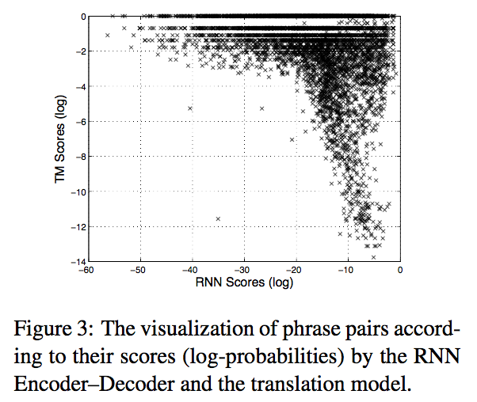
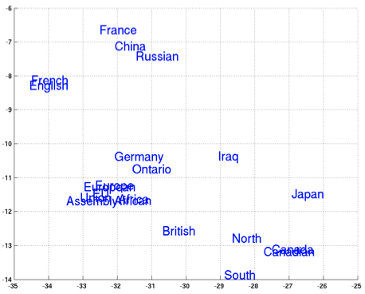
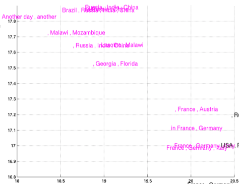
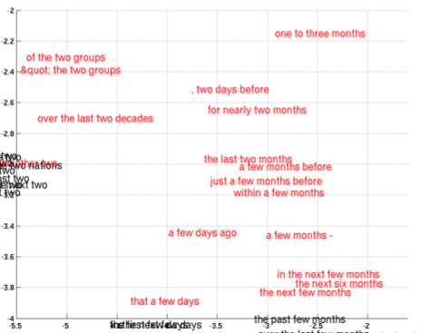

Learning Phrase Representations Using RNN
Updated:
This post is a review of the work [1] of Kyunghyun Cho et al.
Overview
In Kyunghyun Cho et al.’s work [1], they proposed a RNN Encoder-Decoder model which can be adapted to
- Cast a linguistic phrase to a dense continuous vector representation.
- Score a given pair of input and output sequences to enhance the performance of a statistical machine translation (MT) system.
- Generate a target sequence given a input sequence.
In this work, the focus is mainly on the second type of usage. But I am more interested in the first kind of usage. I am going to briefly go through how RNN Encoder-Decoder model improves the performance of MT system and demonstrate the semantically and syntactically meaningful phrase vector representations RNN Encoder-Decoder model can learn.
The Model
I assume readers are familiar with the Seq2Seq model which was proposed by Ilya Sutskever et al. [2] based on the model here. The major differences are
- Seq2Seq model reverses the order of input sequence while RNN Encoder-Decoder model is not.
- Seq2Seq model uses LSTM as its RNN unit while the model here uses GRU. (introduction about LSTM and GRU can be found here)
Enhance Phrase-based Translation Model
RNN Encoder-Decoder is trained on bilingual corpora where the frequencies of each phrase pair are ignored. Due to the reasons: 1) reduce the computetional expense 2) make sure the RNN Encoder-Decoder does not simply learn to rank the phrase pairs according to their numbers of occurances. 3) ensure most of capacity of the model is focused toward learning linguistic regularities.
Trained RNN Encoder–Decoder adds a new score for each phrase pair to the existing phrase table where the score is simply the probability p( o | i ) here. The new score as a feature is used by existing tuning algorithms.
Compared with baseline system Moses [3], the translation model adding the feature from RNN performances better. Interestingly, According to Figure 1, despite many phrase pairs were scored similarly by both translation model and the RNN Encoder–Decoder, there were as many pairs that were scored radically different. They accounted it for that the RNN ignores the frequencies of phrase pairs from the corpus.

Figure 1 is from [1].
Phrase Representations
Since the model is first to encode the input into length-fixed vector, this vector is potientially capable to represent the input. In K. Cho et al.’s experienment [1], this vector is 1000-dimensional. Figures below demonstrate both semantic and syntactic structures of the phrases is captured by RNN Encoder-Decoder.

Figure 2: it is from [1] and shows the relative distances between learned word representations.

Figure 3: it is from [1] and shows the relative distances between learned phrase representations.

Figure 4: it is from [1] and shows the relative distances between learned phrase representations.
Notes
- Instead of recovering input as Word2Vec approaches do, RNN Encoder-Decoder here builds word vectors by taking English phrases as input and producing corresponding French phrases.
- They mentioned that GRU can be regarded as a variant of a leaky-integration unit.
- They were not able to get meaningful result with an oft-used tanh unit without any gating.
- I personally feel like that using bilingual corpus can accelerate learning semantics of words.
- I wonder whether it is possible to segment Chinese words using similar approach on English-Chinese corpora.
References
[1] Kyunghyun Cho et al. Learning Phrase Representations using RNN Encoder–Decoder for Statistical Machine Translation, 2014
[2] Ilya Sutskever et al. Sequence to Sequence Learning with Neural Networks, 2014
[3] Moses, http://www.statmt.org/moses/